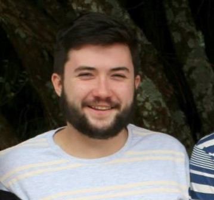

About me
My name is Daniel Medyckyj-Scott, I am 22 years old and I live in Wellington, New Zealand. I was raised in Musselburgh, Scotland and moved to Palmerston North, New Zealand at the age of 13. I attended Palmerston North Boys High School and then moved to Wellington to do a Bachelor of Science Double Major Degree in Computer Science and Statistics at Victoria University of Wellington. Since completing my degree in 2017, I have worked as a Front-end developer for Squiz. I have a passion for programming, solving problems and I enjoy working with, and keeping up to date with, the latest development trends.
Aside from programming, music is a big part of my life. I play a number of instruments and sing in the high performing Wellington based Barbershop Chorus, Vocal FX. In 2016 and 2018, the chorus competed at the International Barbershop Competition in Nashville, Tennessee and Orlandon, Florida placing 6th and 9th in the world respectively. Here is one of the songs we performed in Orlando:
I also sing Tenor in a quartet named The B-Flads. We've competed in the NZ Barbershop Quartet Competition for the last 4 years. We've won Best Under 25 Quartet every year we've competed, and were fortunate enough to win the whole competion in 2018, being named the BHNZ 2018 Quartet Champions. Here is a video from that competition:
I enjoy watching movies, gaming and skiing in the winter seasons. I also enjoy travelling and experiencing new people, language and cultures.